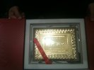
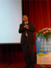

COSA活動記錄簿
留下COSA所辦活動之紀錄
首頁
相簿目錄
::
最新上傳
::
最新留言
::
熱門圖片
::
最高評分
最新上傳
428 次觀看
三月 19, 2013
411 次觀看
三月 19, 2013
421 次觀看
三月 19, 2013
393 次觀看
三月 19, 2013

405 次觀看
三月 19, 2013
241 次觀看
十二月 14, 2012
230 次觀看
十二月 14, 2012

244 次觀看
十二月 14, 2012
208 次觀看
十二月 14, 2012
213 次觀看
十二月 14, 2012
236 次觀看
十二月 14, 2012
202 次觀看
十二月 14, 2012
752 張圖片，共 63 頁
1
2
3
4
5
6
7
8
9
10
11
63